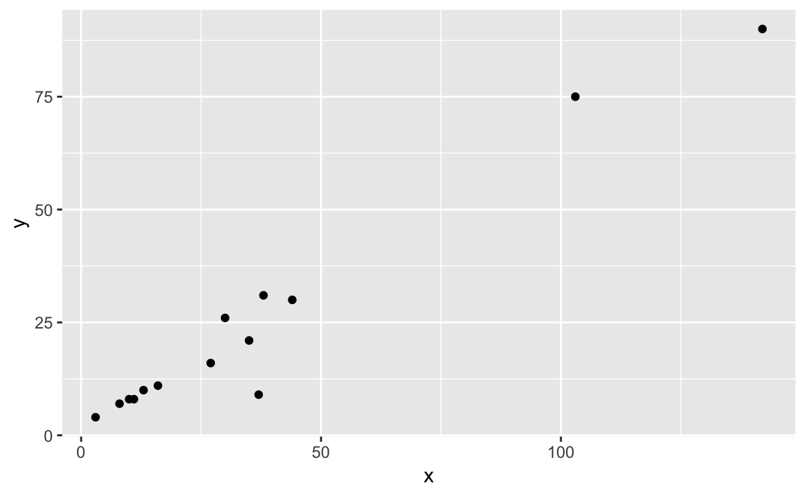
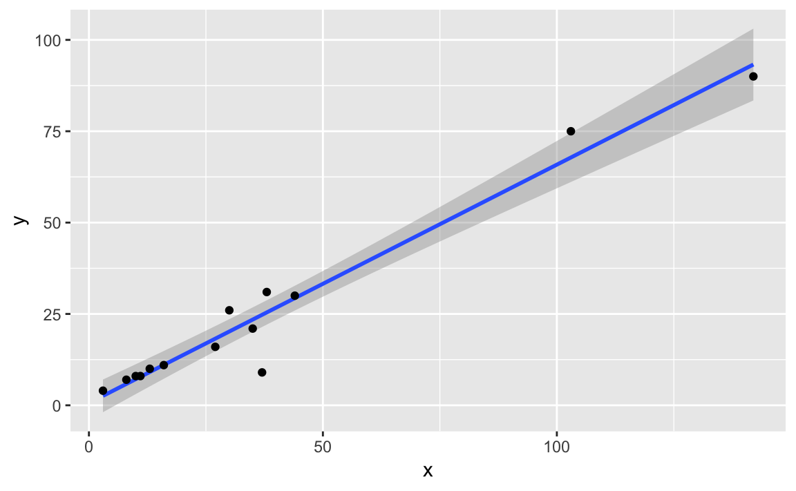

R Lab for Regression Analysis
09 Apr, 2019
Welcome
 This book aims at covering materials of regression analysis. Also, there will be R programming for regression.
This book aims at covering materials of regression analysis. Also, there will be R programming for regression.
library(tidyverse)tidyverse package will be used in every chapter, so loading step will be hidden.
Linear Regression Analysis
data(BioOxyDemand, package = "MPV")
(BioOxyDemand <-
BioOxyDemand %>%
tbl_df())# A tibble: 14 x 2
x y
<int> <int>
1 3 4
2 8 7
3 10 8
4 11 8
5 13 10
6 16 11
7 27 16
8 30 26
9 35 21
10 37 9
11 38 31
12 44 30
13 103 75
14 142 90Relation
We wonder how x affects y, especially linearly.
- Functional relation: mathematical equation, \[y = \beta_0 + \beta_1 x\]
- Statistical relation: embeded with noise
So we try to estimate
\[y = \beta_0 + \beta_1 x + \epsilon\]
BioOxyDemand %>%
ggplot(aes(x, y)) +
geom_point()
Looking just with the eyes, we can see the linear relationship. Regression analysis estimates the relationship statistically.
BioOxyDemand %>%
ggplot(aes(x, y)) +
geom_smooth(method = "lm") +
geom_point()